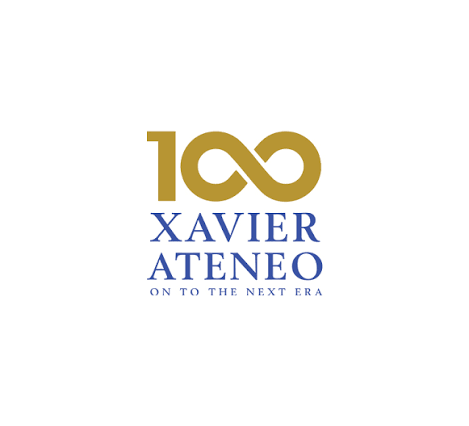

Isang Akademikong Paglalakbay
Isang komprehensibong portfolio sa FIL 201 na naglalaman ng mga natutunan, sinulat, at mga hakbang sa pag-aaral sa Filipino.
Xavier University SHS

Isang komprehensibong portfolio sa FIL 201 na naglalaman ng mga natutunan, sinulat, at mga hakbang sa pag-aaral sa Filipino.
ISANG AKADEMIKONG PAGLALAKBAY: PINAL NA PORTFOLIO SA FIL 201
Final Performance Task
Xavier University - Ateneo de Cagayan Senior High School
Pueblo de Oro Campus, Cagayan de Oro City
MGA MIYEMBRO (PANGKAT 1 - CETTI):
Ang asignaturang Filipino 201 ay hindi lamang isang simpleng pag-aaral ng wika at panitikan; ito ay isang malalim na paglalakbay ng pagtuklas sa yaman ng ating kultura, pagpapatalas ng kritikal na pag-iisip, at paglinang ng kakayahang makipagtalastasan sa makabagong panahon. Ang portfolio na pinamagatang "Isang Akademikong Paglalakbay" ay patunay ng dedikasyon, pagtutulungan, at masidhing pagsisikap ng Pangkat 1 (Cetti) sa bawat gawaing iniatas sa amin.
Sa pamamagitan ng iba't ibang mga pampanitikang sulatin, kritikal na pagsusuri, at mga malikhaing pagtataya na ginabayan ng ating kagalang-galang na guro na si Bb. Kate Paican, naunawaan namin ang tunay na kapangyarihan ng salita. Ang bawat pahina sa portfolio na ito ay sumasalamin sa aming mga hamon na napagtagumpayan, mga aral na napulot, at ang aming patuloy na pag-unlad bilang mga mag-aaral ng Xavier University - Ateneo de Cagayan Senior High School.
Iniaalay namin ang komprehensibong gawaing ito hindi lamang upang matugunan ang mga pangangailangan ng kurso, kundi bilang patunay na ang wikang Filipino ay nananatiling buhay, makabuluhan, at sandata sa paghubog ng may-malasakit na kaisipan.
1. Pabalat
2. Pamagating Pahina
3. Prologo
4. Talaan ng Nilalaman
5. Mga Sulatin (Scaffolds 1 - 3)
6. Epilogo
7. Rubrik
8. Bionote at Curriculum Vitae